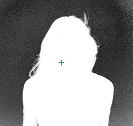

确保了 智能 选择 BG 颜色 选择了操作 (此时应该是，因为它是默认的 操作 模式)。
将光标定位在蓝屏区域 (或您正在使用的任何背景颜色)，通常位于前景对象附近的某个位置。持有 Ctrl/Cmd 向下键并采样目标背景颜色。释放鼠标按钮，Primatte 开始合成过程。如果前景拍摄是在理想的拍摄条件下完成的，Primatte 在这一步已经完成了 90-95% 的键控，你的图像可能看起来像这样。
然而，如果你有一个非常不均匀的背光屏幕，你可能不会得到你想要的结果。如果是这种情况，请启用 调整照明 关于灵长类动物的性质。有关更多信息，请参见 行动部分 .
注意: Primatte 同样适用于任何彩色背衬屏幕。它不必是特定的绿色或蓝色。
提示:
如果您在蓝色区域拖动光标，Primatte 会将多像素样本平均化，以获得要调整的单一颜色。有时，当只采样一个像素而不是一系列像素时，Primatte 效果最好。Primatte 操作中此时选择的颜色对节点从这一点向前的操作至关重要。如果您在选择一系列蓝色阴影后，在教程中遇到进一步的困难，请尝试
智能选择 BG 颜色
再次使用单个深蓝色像素或单个浅蓝色像素进行操作。您还可以切换到 alpha 通道视图，并在蓝屏区域单击，查看在不同区域进行初始采样时获得的不同结果。
提示: 如果你宁愿做一个矩形选择，而不使用默认的 “蜗牛路径” 采样方法，你可以做一个 Ctrl Shift 拖动样本。
提示: 您可以通过 Ctrl / Cmd 在查看器中单击鼠标右键。
提示: 如果前景图像中有一个阴影，你想把它保存在合成中, 不要选择阴影中的任何深蓝色像素，阴影会与前景图像的其余部分一起出现。
使用 Primatte 的第二和第三个步骤需要查看遮罩 或 阿尔法 在查看器窗口中查看。按下 一个 在键盘上键入以更改为 alpha 视图。显示的图像更改为图像的黑白哑光视图，如下所示。

|
|